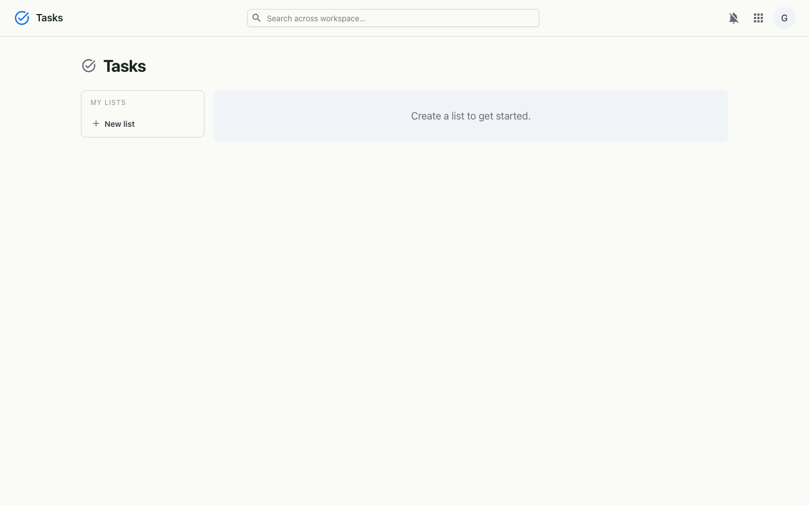
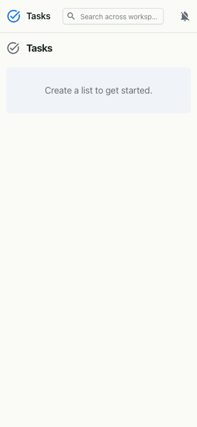

Personal to-do lists with subtasks, due dates and notes — kept in step with your Calendar.
Tasks is a clean, focused to-do app. Keep separate lists for different projects, add tasks in a single line, break them into subtasks, give them due dates and notes, and check them off when they're done. Because Tasks is part of the workspace, it shows up alongside your schedule in Calendar.


Each list belongs to you and holds tasks; a task can be a parent with subtasks via a parent reference, and carries an optional due date and notes. Completion updates optimistically in the interface and syncs to the server. The same Tasks data feeds the Tasks calendar in Calendar, so your to-dos and your schedule stay in one place. Access uses the workspace single sign-on.